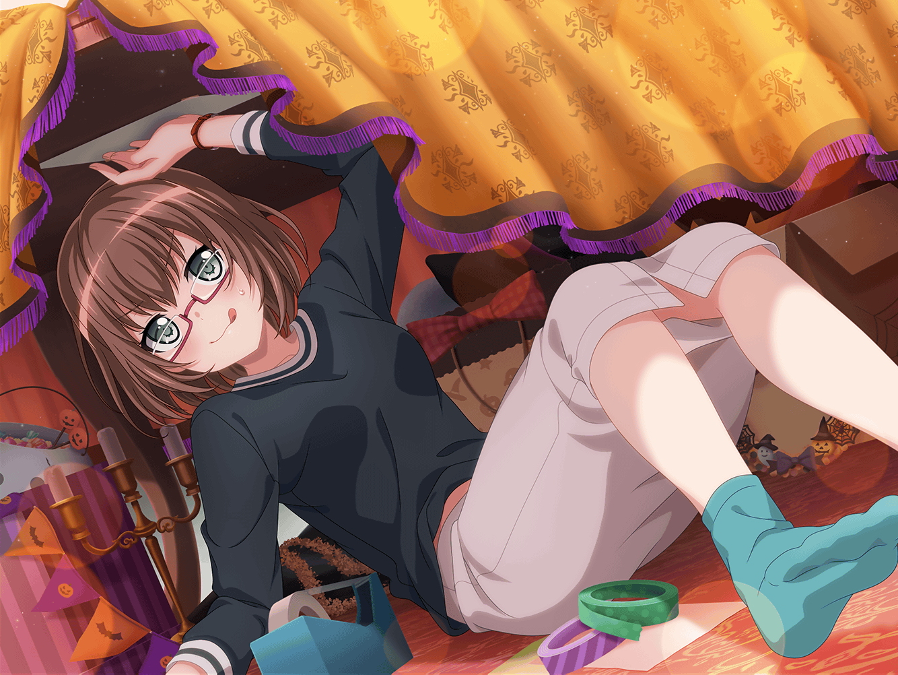

羽丘女子学園 演劇部部室
薫
それじゃあ、練習を始めようか
麻弥
は、はいっ！ よよ、よろしくお願いしますっ！
薫
たしか次のハロウィンのロケで、仕掛け人になってしまったから、
演技の練習がしたい、という話だったね
麻弥
そうですっ！ ぜ、絶対に失敗はできないので、
練習しておきたいんです！
麻弥
ジブンが仕掛け人だと、みんなにバレてしまうと、
企画自体が成立しなくなっちゃいますから……！
薫
フフ、企画を成立させるために、自らを偽る麻弥……か。
想像しただけで、とても儚い気持ちになるね
薫
大体の流れは先日聞いたからわかるとして……
具体的にどんなことを言うんだい？
麻弥
例えばですけど……この場面では、
『あっ、こんなところにカードが！』と言って、
みなさんを誘導するんです
薫
ふむ……なるほどね
薫
……よし、それじゃあ早速そのセリフからやってみよう
私を出演者だと思ってやってみてもらえるかな
麻弥
わ、わかりました！
んんっ、ゴホンっ
麻弥
あ、あぁっ！ み、みなさん見てください！
こんなと、ところにカードがありますよ～！？
薫
なるほど……
麻弥
ど、どう……ですか？
薫
儚さが、足りないね
麻弥
儚さ……ですか？
うう、薫さん！ それ以外の言い方でお願いしますよ〜！
薫
いや、すぐに答えを言ってしまっては意味がない。
麻弥、もう一度やってみてくれ！
麻弥
は、はいっ！
……儚く、儚く……自分なりの解釈で……よしっ！
麻弥
み、みなさん……こ、こちらに……
カードが、ありますよ……
薫
ストップ！
麻弥
は、はい！ 薫さん！
薫
そのままでは観客の心に響かない……
もっとお腹から声を出して！ そして儚く！
麻弥
お腹から声を出して儚く！？
……うう、ダメだ。ジブン、これでも薫さんのことは
ある程度理解してるつもりでしたが……全然わからない
薫
……仕方ない。
一度私がやってみるから、見ててくれ
麻弥
は、はいっ！ お願いします！
薫
あぁ……！ どうしてこんなところにカードが……！
これはきっと神が私にもたらした救いに違いない……！
さあ、みんな！ このカードをご覧……！
麻弥
…………
薫
……ふふ、どうやら麻弥も、
私の演技に見とれてしまったようだね
麻弥
違います！
今のは何から指摘していいか、わからなくなってただけです！
麻弥
儚さがますますわからなくなっちゃいましたよ〜！
それに、神さまが出てきてるし！
薫
まあまあ、落ち着くんだ、麻弥。
次の私のセリフを聞けば、
きっと麻弥も私の言いたいことがわかるはずさ
麻弥
……わかりました。続けてください
薫
では……何故扉を閉じてしまうんだ……！
これはただの扉ではない……
私と君の心を繋ぐ、運命の扉だというのに……！
薫
この隔たり、まるで天の川のようだ……！
儚い！
麻弥
…………
薫
……どうだろうか？
麻弥
どうだろうか？ じゃないですよー！
もう、なんだか別の物語がはじまりそうじゃないですか！
天の川ってなんですか、もう！
麻弥
はあ……薫さんに聞いたのが間違いだったのだろうか……
でも、演技といえばやっぱり薫さんだし……
薫
……フフ。
ようやくいつもの麻弥らしくなってきたじゃないか
麻弥
えっ？ いつもの？
麻弥
……薫さん、
もしかして、ジブンが緊張してたから気を使って……？
薫
緊張は悪いことではないよ、麻弥。
だがそれで本来の演技ができないのでは意味がない
薫
大事なのは、自然体で演じることさ。
固くなりすぎては、いい演技はできない
麻弥
……たしかにジブン、言われてみれば
今日はずっとガッチガチに緊張してました
麻弥
でも、そうですね！
いつものジブンらしくやればいいんです！
薫
そう！ それこそ、儚い演技というものさ！
もし、緊張でうまく言葉が出てこなかった時は
こう言えばいい――
麻弥
『つまりそういうことさ……』ですよね？
薫
フフ、さすがは麻弥だね。
さあ、練習を続けようじゃないか
麻弥
ふふっ。はい、よろしくお願いします、薫さんっ！